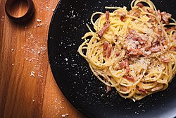

Pasta Carbonara

Description
Delicious Carbonara pasta with savory homemade sauce.
Ingredients:
For this recipe you will need the following:
- Your choice, one box of noodles
- Pack of Bacon
- Half a jar of pickeled jalapenos (could use fresh if preferred)
- Whole yellow onion
- 6 Eggs
- Half block of shredded parmesan (pre-shredded bag works just fine)
- Half a stick of butter
Once you have all of your ingredients you are ready to begin!
Steps:
- Cut bacon into fine strips (or diced) cooking on low to medium heat until starting to brown.
- Finely dice the onion, adding to pan with butter on medium heat; until caramelized.
- While they are cooking seperate the yolks from your eggs and mix with the parmesan until it begins to resemble a paste.
- Set the noodles up to boil once the bacon, onions, and jalapenos are close to being done (give yourself approx. 10 min)
- Save about a quarter to half a cup of the noodle water to add into the mixture.
- Finally, add everyhting together in a bowl and mix well until the egg and parm paste becomes a sauce.
- At last you can enjoy!